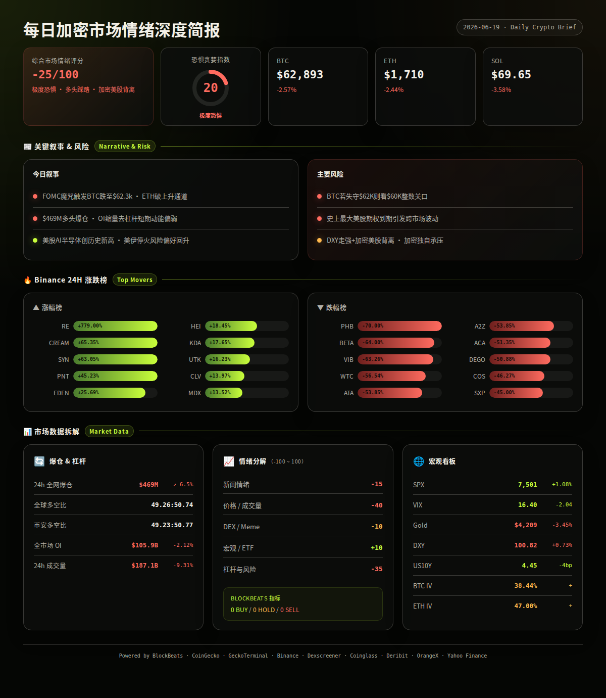
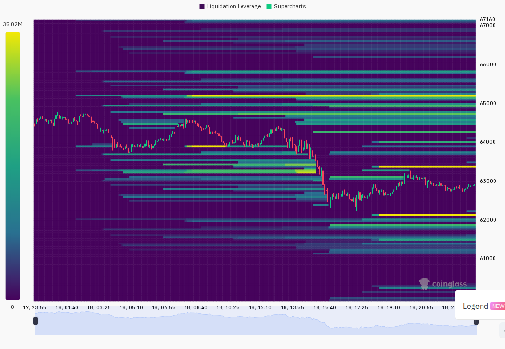
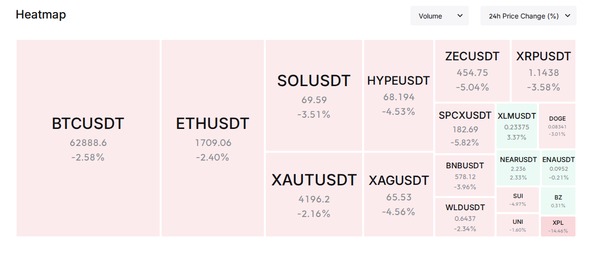

每日加密市场情绪深度报告已完成撰写。以下是完整报告：
FOMC 会议再度触发加密市场抛售 — BTC 跌破 $63,000 至 $62,272 低点，ETH 短暂跌破 $1,700，衍生品市场爆仓 $4.69 亿，多头清算占绝对主导。与此同时美股在美伊缓和与 AI/半导体带动下大涨，形成罕见的加密-美股背离。市场情绪极度恐惧但未至恐慌，期权 IV 偏低暗示衍生品端尚未定价更大波动。
24h变化: 情绪极度恐惧(F&G 20) | BTC ↘2.57% | ETH ↘2.44% | SOL ↘3.58% | VIX 16.40(正常) | 成交量 ↘9.3% | DXY ↗0.73% | 爆仓 ↗6.5%至$469M (multi-source)
—— BTC / ETH / SOL ——
市场主线是 FOMC 会议后的系统性抛售。自 2025 年以来 8 次 FOMC，BTC 有 7 次出现显著下跌，"FOMC 魔咒"再度应验。
信息 1: BTC 24h 跌至低点 $62,272，ETH 短暂跌破 $1,700 至 $1,671，SOL 跌至 $68.23。整体市值蒸发约 2%。 (Binance, CoinGecko)
信息 2: 分析师 Alicharts 指出 ETH 已跌破原有上升通道下轨，下一支撑位看 $1,580。 (BlockBeats)
信息 3: STRC 脱钩持续加剧市场对 MicroStrategy 将再度抛售 BTC 的预期，为额外下行压力来源。 (BlockBeats)
—— 宏观 / 地缘政治 ——
信息 4: 美国与伊朗签署临时协议，解除伊朗港口海上封锁，特朗普政府允许伊朗动用卡塔尔冻结的 $60 亿石油收入购买人道物资。美股受此提振大涨，S&P 500 +1.09%，纳指 +1.91%。 (BlockBeats)
信息 5: 特朗普否认向伊朗支付 $3000 亿的传闻，称"美国只有成功与胜利"。 (BlockBeats)
信息 6: Castle Securities 衍生品策略主管警告：6月19日起将迎来史上最大规模期权到期（数万亿美元面值），叠加季末养老金再平衡，美股未来两周波动性将显著上升。但建议将波动视为技术性回调买入机会。 (BlockBeats)
—— AI / 半导体叙事 ——
信息 7: 费城半导体指数单日飙升 6.4% 创历史新高，Intel +10.6%（苹果合作消息）、MRVL +7.3%、台积电 +6.9%。存储板块 SNDK +11.5%、MU +8.7% 领涨。 (BlockBeats)
信息 8: 亚马逊正洽谈向其他公司出售自研 AI 芯片，目标挑战 NVIDIA 市场主导地位。美国联邦监管机构批准 AI 数据中心更易接入电网。 (BlockBeats)
—— 板块轮动 ——
CoinGecko 涨跌板块:
· 领涨: Fighting Games +44.6%, Backpack Securities 生态 +43.7%, Echo Launchpad +31.2% (CoinGecko)
· 领跌: Printr Launchpad -75.8%, Christmas Themed -60.0%, Arcade Games -31.4% (CoinGecko)
Binance 涨幅榜 (USDT):
· RE +779%, CREAM +65.4%, SYN +63.1%, PNT +45.2%, EDEN +25.7%, HEI +18.5%, KDA +17.7%, UTK +16.2%, CLV +14.0%, MDX +13.5% (Binance)
跌幅榜: PHB -70%, BETA -64%, VIB -63.3%, WTC -56.5%, ATA -53.9%, A2Z -53.9%, ACA -51.4%, DEGO -50.9%, COS -46.3%, SXP -45% (Binance)
—— 融资 / VC ——
信息 9: RWA 收藏品基础设施 Renaiss Protocol 完成 $150 万种子轮融资，YZi Labs 领投。平台上线至今交易额超 $2000 万，用户超 26 万。 (BlockBeats)
信息 10: 稳定币/法币基础设施 Range 完成 $830 万 A 轮融资，客户包括 Circle、Solana Foundation、Jupiter。 (BlockBeats)
—— X/Twitter KOL 信号 ——
信息 11: 过去 24h 559 条推文中，代币提及榜首为 ASTEROID (7次/4人)，其次 BTC (3次/3人)。叙事分布以 AI/Agent (91条)、CRYPTO市场 (77条)、地缘政治 (77条) 为主。X 面 BTC 偏多讨论但价格反向下跌，形成信号分歧。 (X Lists, analysis)
风险 1: FOMC 后惯性下跌延续 — BTC 已跌破 $63K 关键心理位，若 24h 内无法收复 $63,500-$64,000 区间，可能进一步测试 $60,000 整数关口。 → 观察: 若持仓量继续下降且 funding rate 转负，空头主导格局确立；失效条件: 若美股期权到期日 (6/19) 后资金回流加密，BTC 快速收复 $63.5K 则否定。 (BlockBeats, analysis)
风险 2: 史上级别美股期权到期引发跨市场波动 — 数万亿美元期权 6/19 起到期，可能导致传统与加密市场同步剧烈震荡。 → 观察: 若 VIX 从 16.4 快速上升至 20+，恐慌将跨市场传导；失效条件: 若 VIX 保持低位且波动仅集中在开盘/收盘时段则不构成系统性风险。 (BlockBeats, Yahoo Finance)
风险 3: ETH 技术面破位 — ETH 已跌破上升通道，$1,580 为分析师指出的下一支撑位，距离当前价约 -7.6%。 → 观察: 若 ETH 跌破 $1,670 前低，加速至 $1,580 概率上升；失效条件: 若 ETH 站稳 $1,720 以上则通道修复。 (BlockBeats, analysis)
风险 4: MicroStrategy/STRC 脱钩引发 BTC 抛售担忧 — 市场对 Strategy 再度卖出 BTC 的预期升温。 → 观察: 若 STRC 继续单边下跌，BTC 将承受额外卖方压力；失效条件: 若 STRC 与 BTC 价差收窄则解除警报。 (BlockBeats, analysis)
风险 5: DXY 走强对加密形成压制 — DXY 升至 100.82 (+0.73%)，强美元环境利空风险资产。 → 观察: 若 DXY 突破 101.5，加密可能进一步承压；失效条件: 若 DXY 回落至 100 以下则缓解。 (Yahoo Finance, analysis)
风险 6: 爆仓潮后 V 反或继续踩踏 — $4.69 亿爆仓中多头占比极高，历史上类似结构后有两种路径：空头获利了结后 V 反，或反弹无力引发二次踩踏。 → 观察: 接下来 12h 成交量与 OI 变化方向为关键；失效条件: 若 OI 回升伴随价格企稳则为健康修复。 (Coinglass, analysis)
非财务建议声明: 本报告仅提供市场数据和情绪分析，不构成任何买卖建议。
· 6月19日 — 史上最大美股期权到期日开始 — 预期高波动 (中性) (BlockBeats)
· 6月19-30日 — 季末养老金再平衡 — 可能带来增量资金流入 (偏多) (BlockBeats)
· 6月23日 — SK Hynix 大规模招募截止 — 半导体 AI 叙事延续动力 (中性偏多) (BlockBeats)
· 持续 — 美伊临时协议后续谈判 — 地缘缓和利好风险资产 (偏多) (BlockBeats)
· 持续 — SpaceX $200 亿债券发行路演 — 机构流动性观察窗口 (中性) (BlockBeats)


综合评分: -25/100 (严重偏向恐惧)
5 个维度:
新闻情绪: -15/100 — FOMC 引发抛售是主要负面叙事，但美伊缓和、美股 AI 大涨构成外部正向对冲。币圈新闻以跌为主，ETH 技术破位加剧担忧。 (BlockBeats)
价格/成交量: -40/100 — BTC/ETH/SOL 全面下跌 2.4-3.6%，成交量萎缩 9.3%，量价齐跌显示缺乏买盘支撑。BTC 主导地位微升至 55.88%，说明资金从山寨币流向 BTC，避险情绪明显。 (Binance, CoinGecko)
DEX/meme 活跃度: -10/100 — Solana 链上仍有 $1M+ 交易量池，KINS (+56.7%)、CookingTrump (+622.7%) 等 meme 币活跃，但 ASTEROID CoinGecko 显示 +88.7% 涨幅与 Dexscreener 显示 -0.02% 存在严重数据偏差，需警惕。 (GeckoTerminal, Dexscreener)
宏观/ETF/流动性: +10/100 — 美股大涨 (S&P +1.1%, 纳指 +1.9%)，AI 半导体创历史新高，美伊停火利好风险偏好。但 DXY 走强 +0.73% 对加密构成压制，Gold 大跌 -3.45% 显示传统避险资产被抛售。加密未能跟上美股是一个警示信号。 (Yahoo Finance, BlockBeats)
杠杆与风险: -35/100 — 24h 爆仓 $4.69 亿 (+6.5%)，多头清算占比极高。OI 下降 2.1%，成交量下降 9.3% — 这是典型的去杠杆+缩量下跌组合，短期修复需要时间。但 funding rate 仍处中性偏低水平，未出现恐慌性负费率。 (Coinglass, Binance)
BlockBeats Bottom/Top Indicator: ⚠️ API 返回 404，今日无法获取该数据。综合情绪评分基于其他可用数据源。
· BTC: $62,893 (CoinGecko) / $62,906 (Binance), 24h -2.57%, 成交量 16,929 BTC, 高低区间 $62,272-$64,806。1h 蜡烛显示前 12h 在 $63,800-$64,800 窄幅震荡，随后在约 14h 前急跌至 $62,294，之后在 $62,600-$63,100 企稳横盘。premiumIndex: mark $62,900 vs index $62,920，期货微幅折价 -0.03%，中性偏空。 (Binance, CoinGecko)
· ETH: $1,710 (CoinGecko) / $1,709 (Binance), 24h -2.44%, 成交量 312,375 ETH, 高低 $1,672-$1,763。蜡烛同步 BTC 节奏，但反弹力度更弱，当前在 $1,709 附近徘徊。premiumIndex: mark $1,709 vs index $1,710，接近平水。 (Binance, CoinGecko)
· SOL: $69.65 (CoinGecko) / $69.58 (Binance), 24h -3.58%, 成交量 2.26M SOL, 高低 $68.23-$72.68。SOL 相对弱势，跌幅大于 BTC/ETH，且反弹幅度最小。premiumIndex: mark $69.60 vs index $69.60，完全平水。 (Binance, CoinGecko)
· 全球总市值: $2.255T, 24h -2.05%, 24h成交量 $81.6B (-5.3%)。BTC 主导度 55.88%，ETH 9.15%，稳定币合计 11.58%。 (CoinGecko)
· 衍生品杠杆 (CoinGecko derivatives): 该端点返回空数据，合并分析基于 Binance 与 Coinglass 数据。
· 爆仓数据 (Coinglass): 24h 总爆仓 $469.3M, +6.47% 较前日。全球多空比 49.26:50.74 (空头略占优)。Binance 多空比 49.23:50.77，与全球一致。爆仓集中在多头一侧 ($176M 在 1 小时内被清算)，属于恐慌性多头踩踏特征。 (Coinglass, BlockBeats)
· OI 与成交量: 24h 总成交量 $187.1B (-9.3%), 总 OI $105.9B (-2.1%)。缩量+降OI 是典型的避险去杠杆模式，短期动能偏弱。 (Coinglass)
· 宏观看板: SPX 7,500.58 (+1.08% 24h), VIX 16.40 (-2.04, 正常区), DXY 100.82 (+0.73% 24h), US10Y 4.45% (-4bp), Gold $4,208.70 (-3.45% 24h)。加密与 SPX 出现罕见反向走势，BTC-SPX 短期相关性断裂。DXY 走强 + Gold 大跌暗示传统市场正在定价风险偏好回升，但加密独自承压。 (Yahoo Finance)
· 期权波动率 (Deribit): BTC ATM IV 38.44% (低于 40% 正常下界 → 低波动)，ETH ATM IV 47.00% (正常区间)。ETH-BTC IV 价差 8.56pp，低于 15pp 阈值，表明当前无显著山寨币投机溢价。值得注意的是，BTC IV 处于低位但价格正在下跌 — 期权市场尚未定价更多下行风险，这可能意味着下跌空间尚未被充分对冲。 (Deribit)
以下基于 CoinGecko trending + DEX 数据交叉验证，筛选条件: 价格变动 > ±5% 或有叙事支撑。
ASTEROID (Solana): $0.0001739, 24h +88.7% (CG), 市值 $73M。DEX: 流动性 $18M, 24h成交量 $306K, 买卖比 12:12。催化剂: X/Twitter 提及量最高 (7次/4人)，但 Dexscreener 显示价格变动为 -0.02%，与 CG 数据严重矛盾 — 可能有多个链上池或数据更新延迟。风险: 数据不可靠，需进一步验证。 (CoinGecko, Dexscreener, X Lists)
SIREN (Solana): $0.1169, 24h +142.9% (CG), 市值 $85M。DEX: 流动性 $95M, 24h成交量极低 ($4) — 链上交易量大幅低于交易所成交量，提示主要交易可能发生在 CEX。风险: DEX 流动性虽高但交易不活跃，链上数据参考价值有限。 (CoinGecko, Dexscreener)
LAB (Solana): $17.74, 24h +34.5% (CG), 市值 $5.5B。DEX: 流动性 $3.7B, 24h成交量 $306K — 属于高市值低 DEX 活跃度特征，主要交易在 CEX。 (CoinGecko, Dexscreener)
· GeckoTerminal Solana trending pools (24h 成交量 > $1M):
1. KINS/SOL: 成交量 $2.92M, +56.7%, 流动性 $465K (GeckoTerminal)
2. RIV/SOL: 成交量 $2.60M, -87.4%, 流动性 $21K — 疑似 rug/砸盘 (GeckoTerminal)
3. TOESCOIN/SOL: 成交量 $1.83M, +2.3%, 流动性 $348K (GeckoTerminal)
· GeckoTerminal Solana 新池 (48h): 无满足流动性 > $50K 且成交量 > $100K 的新池，链上新发行热度低。 (GeckoTerminal)
· BlockBeats Solana top10_netflow: ⚠️ API 返回 404，今日无法获取。
· 备注: X 信号中提及的 ASTEROID 获得最高提及量（7次/4人），但在 Dexscreener 上价格几乎未动，CG 却显示 +88.7%。这一矛盾高度异常，建议对该 token 保持谨慎，可能存在跨链桥或数据源问题。
以下为基于多源数据交叉验证的概率情景分析：
情景 1 (概率: 45%, 置信度: 中): FOMC 后惯性探底 + 美股期权到期日波动 — BTC 继续在 $62,000-$63,500 区间震荡，测试 $60,000 支撑的尾部风险存在但概率低于 20%。关键条件: 美股在期权到期后资金回流，VIX 保持在 20 以下。若发生则 BTC 目标: $61,500-$63,500, ETH: $1,650-$1,730。 (multi-source, analysis)
情景 2 (概率: 35%, 置信度: 中): 空头获利了结 + 美股看涨情绪带动反弹 — $469M 多头爆仓后空头获利了结，叠加美股 AI 板块强势，加密获得溢出资金。关键条件: BTC 快速收复 $63,500，成交量放大印证买盘回归。若发生则 BTC 目标: $64,500-$66,000, ETH: $1,750-$1,800。 (multi-source, analysis)
情景 3 (概率: 20%, 置信度: 低): 加速下跌触发二次踩踏 — 若 BTC 跌破 $62,000 且 OI 未进一步下降（说明多头尚未出清），可能触发更大规模连锁清算。关键条件: 新一轮负面消息（如 MicroStrategy 确认抛售）或美股突然转弱。若发生则 BTC 目标: $58,000-$60,000, ETH: $1,550-$1,600。 (multi-source, analysis)
以上为基于当前数据的概率判断，不构成交易建议。